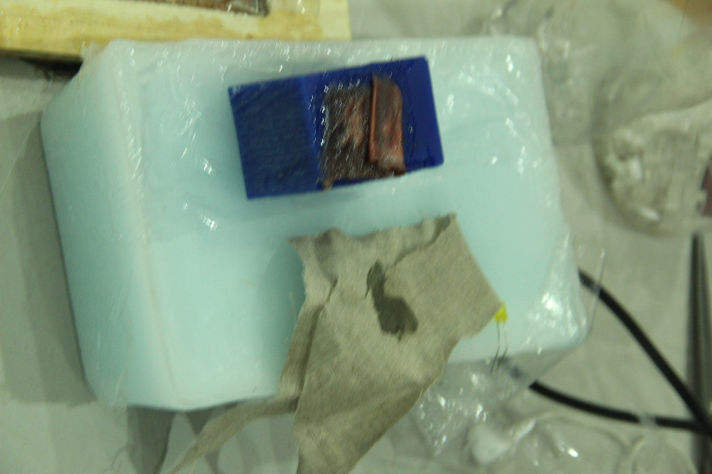
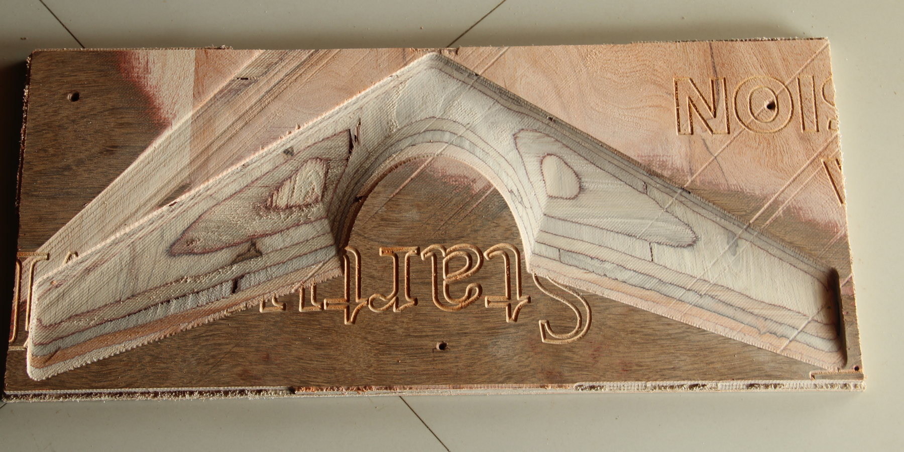
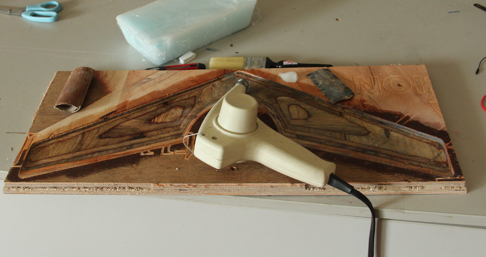

Composites
For this assignment I have to make a composite structure, which is 3D and has an area about (probably more than) 1ft
2. Composites are easy to understand but all are not so easy to make, composite has at least two components, a fiber and a matrix material, which binds the fibers
together into a solid mass. The fibers are generally good at handling tension while the matrix material will handle the compression load. The two combined will have the
best of both, will handle compression and tension loads well, and may produce a lighter and stronger part than the two original materials. There are many composites around
us, wood (cellulose as fiber and
lignin as the matrix), steel reinforced concrete (steel bars as the fiber and the mortar as the matrix), fiber glass boat, fiber glass furniture, glass/carbon fiber
automotive/aerospace parts.
In fact even the PCBs are composites made of glass and epoxy or cellulose and epoxy.
Some composites may even have some sort of filler materials.
Even before knowing about composites we might have used or made them, no I'm not talking about concrete, for example I have made a few, using cotton ball, cotton strings and cyno-acrylic glues or sometimes silicone/rubber glues. I used to make these, sometimes as fillers to seal/repair some plastic structure, to strengthen electrical cables like the laptop/phone charger etc.
Now let's get to the asssignment.
The Assignement
A Flying Wing.
As always I wanted to make something that is useful or will be useful to me or someone else. I always wanted to make a radio controlled aircraft, multi copter or fixed wing. This is a perfect chance for me to try building a composite wing for the aircraft. I decided to stick with a Flying Wing design, something like this.
The project won't be that simple, first of all I don't have any experience with design or analysis of wings, I just know the basics of aerodynamics, nothing more (but I can understand
more!), so I searched a lot for reference designs, airfoil shapes that other people have used for the aircraft of the similar size. Then about the actual construction, carbon
fiber is too expensive and definitely not for newbie, same goes for glass fiber, these stuff are dangerous too, thin and sharp fibers.
Next problem is the resin, we (people in our lab) have ordered a casting epoxy and was not working like I wanted for my purpose. I know that there are slow setting two
part Epoxy Resins for small industries branded as Araldite, these are available almost any hardware store and they are relatevley cheap. They are generally used as an adhesive
and I know that they set into a hard mass. they stick well to most surfaces.
Choice of Fiber and Resin
So I decided to use textile fabric, cotton or nylon, and I decided on nylon as it seems much stronger.
For the resin I choose ARALDITE® AW 106 Resin. This thing is a two part epoxy, got a long work time, takes about 24 hours to set at room temperature (sets faster and stronger as the temperature goes high). It's non toxic (means if touches your skin it's okay unless you have an allergic reaction to it, also means can be handled with no gloves?). Before setting it can be washed off with just water, it doesn't make irritating smell.
Thinning the epoxy?
The downside of this epoxy is that it is viscous, slightly more than honey, more like caramel. But it's okay as we have lot of working time. I thought about thinning it down with some solvent but on further reading I came to know that thinning is possible with solvents like acetone, alcohol, MEK etc at a cost, thinning alters the mechanical properties, thinning with 5% lacquer thinner may reduce the strength by as much as 35%. Acetone seems to have the least impact, perhaps this evaporates much before the resin hardens. So I could try acetone or some other volatile solvents like petrol/gasoline. But first I'll try without thinning.
Heat can also make the resin less viscous, but at the cost of working time, higher the temperature faster the resin sets, you may get surprised!, I don't want any.
Thinning the resin has it's advantages too,
I could make a thinner and lighter part compared to the viscous resin.
The Design
I found many articles about making a flying wing model airplane.
- http://www.instructables.com/id/Making-a-fibre-RC-flying-wing-PART-1/
- many discussion/blogs at diydrones.com
- many discussion/blogs at rcgroups
- http://flitetest.com/articles/northrop-grumman-x-47b-design-build
- ...
The shape size etc. are all just a guesswork, I have no idea if it's going to fly, no idea how heavy it will be, but I'll come to know soon.
I made the outline in Rhino and made the front and back lines as separate, then used the SWEEP2 function to generate the wing.

The wing is then cut into two pieces as I cannot make this wing as a single piece. When I make the composite, I'll have to make the two halves separately and then join them together.
The mold was made negative so that I can have a better finish (not better than the mold itself!) for the outer surface.
Making the Mold.
The designs are ready, I scaled down my design to 60CM (wingspan), so each half will fit in a 60 x 30 piece, none of the half is deeper than 18mm, so I can use the 18mm plywood for
machining the mold in the Shopbot. For the Shopbot the files were exported in the .stl format. A few screen shots will explain the process and the
parameters.
Now we have to place our material and choose the origin and then load the files in the order of 'rough', 'finish' and 'cut'. Here is a time-lapse of the roughing operation (>30x).
The finish cut took even longer.
Problem
During the finishing operation something went wrong, lost the connection between the machine's control box and the PC. I had to reboot the PC. The origins I set was still preserved.
The operation got terminated at about 35 minutes, 10 minutes before the completion. I could have restarted the operation, but then it's huge waste of time and power.
The solution was to edit the G-Code, having done a few assignments, I now know how to read and edit the G-Codes. I approximated the coordinates of the location at which
the job has stopped. Actually the X-coordinate only. The router moves in a raster pattern at 45 degrees. So I found the approximate X value of the last pocket it milled
corresponding to a Y=0. I found a corresponding entry in the G-Code like M3 X,Y,Z, which will make the head move to X,Y,Z. I made the head to move to this location
to confirm and then deleted all the M3 commands above that. This new tool-path was working fine, now I saved a little bit of time and learned something!.
Preparing Mold
The mold, fresh out of the machine had a lot of rough surfaces which required some heavy sanding with fine grit sandpaper. The plywood was also not of the best quality, had some voids
in it and a few cracks. I had to fill the voids with something. Wax seems a good idea, then I realized that I can use the wax as a releasing agent too. Time to test it.
Release agent-test
 zoom-in; single click => normal size" ondblclick="this.width='1000'" onclick="this.width='600'" />
And as expected the Araldite didn't stick to the wax.'Sanding'
 zoom-in; single click => normal size" ondblclick="this.width='1000'" onclick="this.width='600'" />
Is it just me or..? Do you feel that the mold is raised above the surface, when you focus on the left half? It's actually a depression.'Waxing'
 zoom-in; single click => normal size" ondblclick="this.width='1000'" onclick="this.width='600'" />
The wax was also used to seal any imperfection and other patch works on the mold.
Layup

Mixing the resin
don't drag your brush along the surface, will make wrinkles, use slight tapping actions or......STIPPLING, yeah, that's the word.
Work from inside out.
After the first layer, another thin coat of epoxy was brushed on, then the second layer of fabric was laid. This can be repeated, but I stopped at two.
Vacuum bagging
The plastic wrap used is meant for packing food items and we tested to make sure that the resin doesn't stick to it.
Now that's half of the wing done. Now I have to repeat the same procedure for the other half. Once I have the two halves I need to bond them together and will be applying one or two more layers of the fabric, but only near the joints to save weight.
De-Molding
The model is slightly flexible, but not too much, when the other half is done and joined, it will be stiff enough. The flexibility is because of two reasons,
A slight flexibility for the wing is a useful feature, I guess!
Adding the other half to make the structure complete will make it more rigid. If that is also not sufficient I will be adding a few thin strips of fabric through the middle
(from inside of course), this should work as a reinforcement.
The heat should make the resin harden further, this is because the heat makes the
Polymerization wikipedia faster and will make more
vross-links. The polymerization is the process of making a long chain of the individual monomers. When we have the individual monomers in free state, they will be
like liquid, as they form long and long chains, they will start gelling and eventually harden. But not all 'fully reacted' mixture will be hard, they can be flexible,
like rubber, this is because there is no strong bond between the individual chains of the polymer or because the chain length is small. They are like cotton ball, the
cellulose is a long chain of glucose but the individual fibers are lot linked together. The fibers are linked together by only weak Van Der Waals force or hydrogen binding.
Another example is rubber before
vulcanization.
If we were to make chemical reaction to form chemical links between the chains, this process will make the entire mass much more stringer and stiff. Vulcanized rubber
is the example, where the sulfur make the cross links between the chains.